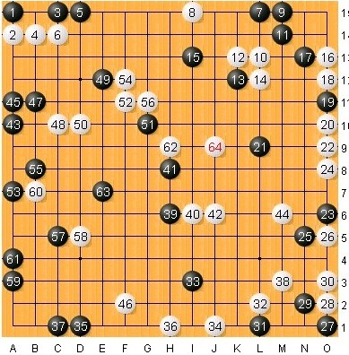

跪求当年vcf习题中84步225手下满正好5连的题目
#1 跪求当年vcf习题中84步225手下满正好5连的题目 作者：小元 发表时间：2011-7-6 18:08:21
有谁记得这到题目吗？早期renjuclass里有人摆过的。#2 Re:跪求当年vcf习题中84步225手下满正好5连的题目 作者：萧何 发表时间：2011-7-6 18:19:03
 这个很多吧
这个很多吧
#3 Re:跪求当年vcf习题中84步225手下满正好5连的题目 作者：岑小鱼 发表时间：2011-7-6 19:59:25
这个目算不少...就在这个版块里面
我认识的人里面只有中中目算出一个....太有耐心了
一般我喜欢做15手左右的 超过25手的从来不碰。。。
#4 Re:跪求当年vcf习题中84步225手下满正好5连的题目 作者：极地剑客 发表时间：2011-7-7 5:43:06
知道也不说~~~#5 Re:Re:跪求当年vcf习题中84步225手下满正好5连的题目 作者：小元 发表时间：2011-7-7 11:54:38
引用：2楼的倒是找找看，有没有84步VCF的题目？
原文由 萧何 发表于 2011-7-6 18:19:03 :
#6 Re:Re:Re:跪求当年vcf习题中84步225手下满正好5连的题目 作者：死劲哭 发表时间：2011-7-7 11:57:34
引用：84步？ 对方配合的吧？
原文由 小元 发表于 2011-7-7 11:54:38 :引用：2楼的倒是找找看，有没有84步VCF的题目？
原文由 萧何 发表于 2011-7-6 18:19:03 :
#7 Re:跪求当年vcf习题中84步225手下满正好5连的题目 作者：隐藏菜系 发表时间：2011-7-7 12:31:27
=======上图对应的爱五子棋谱代码如下，以便你拆解：========
h8g8g9f7g10f11i5g6k1n2l2j6o4h3g2h2g1a1e1a2a5b1m4i8j2j10i11h12i13i14k13n15h15f14a15a14b15b13a13a12c14d14o11m10o9o8n9m8m9n7m7l7c9a10
======================================================
刚才找了一下，不知道是不是这个，冲完应该是223步
［ 小元 于 2011-7-7 13:20:25 时花20金币送鲜花一朵］
#8 Re:跪求当年vcf习题中84步225手下满正好5连的题目 作者：掌棋如烟 发表时间：2011-7-7 13:01:26
#9 Re:跪求当年vcf习题中84步225手下满正好5连的题目 作者：陨落之城 发表时间：2011-7-7 13:21:00
想出这种题目的人真够变态的。#10 Re:跪求当年vcf习题中84步225手下满正好5连的题目 作者：小元 发表时间：2011-7-7 13:22:20
84步VCF应该题目上是58步，不过感谢楼上的帮忙寻找#11 Re:跪求当年vcf习题中84步225手下满正好5连的题目 作者：海月 发表时间：2011-7-7 14:26:07
那题好像是我摆的，不过好久了我也忘了#12 Re:跪求当年vcf习题中84步225手下满正好5连的题目 作者：萧何 发表时间：2011-7-7 14:53:57
=======上图对应的爱五子棋谱代码如下，以便你拆解：========
e15b15g15c15k15h15e14i15a13j15c12i14a11h13o14l15n13m15j12n15f11g10e9c10e7b7a5b6a4b2c5n10j9j8h8h6i6i4i3h3l4l7n4o6n7o8f2o1e3n1e1o2c1m2
======================================================
=======上图对应的爱五子棋谱代码如下，以便你拆解：========
e15a15a14a13b12a12d13d15i15h15k15f15k14n11m15n9o12a8a9c7b7c6a6a5d5a4c1a3d1a2e1c2f3e2f5g3i4i3j4h5j5h2k5i1m6l7n8j6o8j7o5o6o3o4n2o2m1o1h8h10h9f10b10l1c10l4
======================================================
=======上图对应的爱五子棋谱代码如下，以便你拆解：========
a15a14b15b13c14d14a13a12h15f14i13i14k13n15i11h12g10f11g9g8h8i8c9a10a5a2e1a1g1b1g2h2j2h3l2n2k1j6i5g6m7l7m9m8n9m10o9o8o11n7m4f7o4j10
======================================================
=======上图对应的爱五子棋谱代码如下，以便你拆解：========
e15a15i15b15l15c15b14d15o14f15b13m15i13n15j12o15a11a14c11n14j11f12o11b11o10f11a9h10d9j10a7l10g7h9h8i9i6g8c5b6b3b4a1a3d1a4e1f7f2g4h2k1h1n1k2l7k3m6n4n9
======================================================
不知道有没有你要的
#13 Re:跪求当年vcf习题中84步225手下满正好5连的题目 作者：小元 发表时间：2011-7-7 15:00:43
时间太长了，想不起来了，印象中是225手五连，上面这几道不知道是不是。#14 Re:跪求当年vcf习题中84步225手下满正好5连的题目 作者：萧何 发表时间：2011-7-7 15:01:40
这几道应该都是225手胜的［ 小元 于 2011-7-7 16:21:27 时花20金币送鲜花一朵］
#15 Re:跪求当年vcf习题中84步225手下满正好5连的题目 作者：小元 发表时间：2011-7-7 16:19:43
那应该要80多步VCF了#16 Re:跪求当年vcf习题中84步225手下满正好5连的题目 作者：杨文浩 发表时间：2011-7-8 0:40:55
记忆中fc游戏里有个叫超级五子棋的，里面的诘棋模式下有VCF题，最后3个题都是刚好冲满225的，也许有你想要的。这个游戏站里有，FC俗称小霸王
#17 Re:跪求当年vcf习题中84步225手下满正好5连的题目 作者：死劲哭 发表时间：2011-7-8 0:46:22
跪求？不至于！男儿膝下有黄金
#18 Re:跪求当年vcf习题中84步225手下满正好5连的题目 作者：杨文浩 发表时间：2011-7-8 0:53:42
求婚总得跪吧？个人认为，此乃态度问题，比黄金重要的，都可以跪求。
不知楼上认同否？
#19 Re:跪求当年vcf习题中84步225手下满正好5连的题目 作者：杨文浩 发表时间：2011-7-8 1:39:34
R)6D.jpg)
 ，不知道有没有算错
，不知道有没有算错#20 Re:Re:跪求当年vcf习题中84步225手下满正好5连的题目 作者：死劲哭 发表时间：2011-7-8 9:01:59
引用：求婚时，准新郎向准新娘单腿跪求是因为：他所跪的这个人是要照顾他一生一世的，所以是应该的！其他人嘛（当然不包括父母），断不可跪之
原文由 杨文浩 发表于 2011-7-8 0:53:42 :求婚总得跪吧？个人认为，此乃态度问题，比黄金重要的，都可以跪求。
不知楼上认同否？
#21 Re:跪求当年vcf习题中84步225手下满正好5连的题目 作者：小马甲 发表时间：2011-8-5 12:55:34
楼上的脑子没问题吧#22 Re:跪求当年vcf习题中84步225手下满正好5连的题目 作者：4 发表时间：2011-8-6 3:18:12
=======上图对应的爱五子棋谱代码如下，以便你拆解：========
h8j8i7j9m9i10m11o12o11o14n13b15a15c15f15d15i15a1e1f2o1m2m1j2o2n3o4m5l4a4a5a6a2a7c7a8b9b7a13c8a11d8k15d7h14h3n12c6o10m7
======================================================
感觉这个是步数最多的VCF。